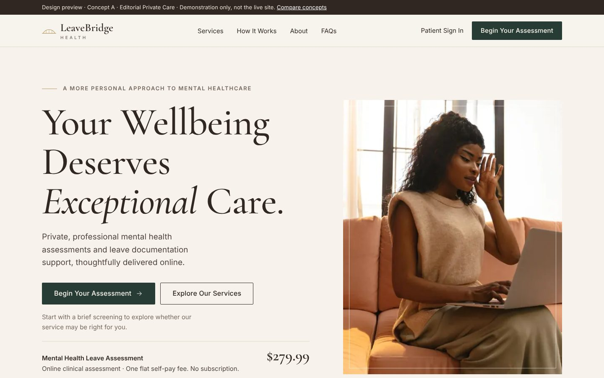
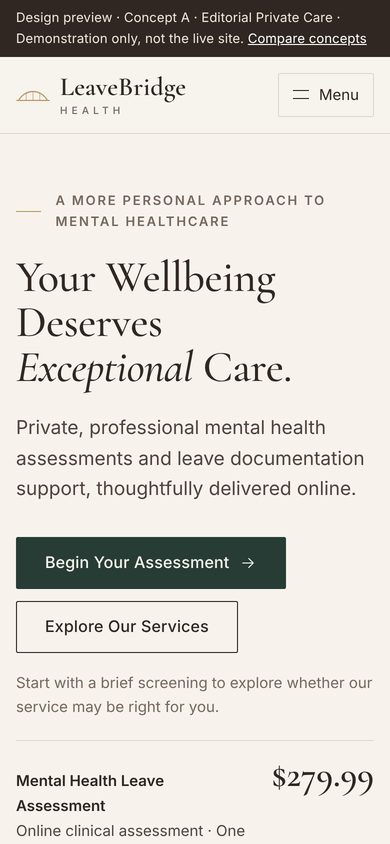

Recommended
A · Editorial Private Care
- Typography
- Cormorant Garamond headlines at large editorial sizes with one italic accent word; Inter for body text at 17px.
- Image treatment
- One prominent window-lit portrait in a 4:5 frame with a fine inset rule. Everything else is type, hairlines and whitespace.
- Layout
- Asymmetric split hero, ruled trust strip, numbered three-column process, and an editorial price list that reads like a private practice fee schedule.
- Customer journey
- Headline, primary action and the $279.99 fee are all in the first screen; services and the clinician follow, then a sticky-heading FAQ.